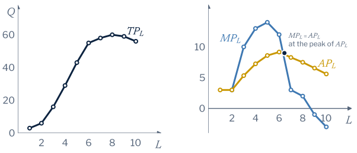

Lesson 5
FIN 30210 Managerial Economics
Jason R. Reed, PhD, University of Notre Dame
Firms use productive resources (inputs, or factors of production) to make the goods and services that satisfy consumers’ “unlimited” wants.
Non-human resources Land: gifts of nature, such as raw materials.
Capital: not the financial kind. Tools, machines, equipment, and office buildings.
Human resources Labor: the physical and mental talents of people engaged in production. Labor is unique because its intensity is decided by the worker.
Entrepreneurial ability: the person who arranges the renting of land, labor, and capital, makes non-routine decisions, innovates, and refines production techniques.
The organizational structure of the firm is assumed to maximize profits.
The production function The technological relationship that describes how factors of production are efficiently transformed into goods and services.
In general, output \(Q\) is a function of its inputs:
\[ Q = f(K, L, M) \]
where \(K\), \(L\), and \(M\) are capital, labor, and land.
Production functions tend to be highly specialized and unique to each firm, but we can approximate the relationship of inputs to outputs with regression.
One of the most widely used production functions in theoretical and empirical work is the Cobb-Douglas (CD) production function. For two inputs:
\[ Q = AK^{\alpha}L^{\beta} \]
\(\alpha\) and \(\beta\) are known parameters, and \(K\) and \(L\) are capital and labor. \(A\) is total factor productivity: the output not attributed to capital and labor.
Suppose \(Q = 25K^{0.5}L^{0.5}\). There are infinitely many combinations of capital and labor that make 8 units (as long as they’re divisible). How do we know which is best?
The CD production function lets us analyze three properties of the production process:
Substitutability between inputs
Returns to scale
Diminishing marginal product
Returns to scale measure the change in output from a common change, \(z\), in all inputs:
\[ Q(zK, zL) = (zK)^{\alpha}(zL)^{\beta} = z^{\alpha+\beta}K^{\alpha}L^{\beta} = z^{\alpha+\beta}\,Q \]
Constant returns to scale
Output changes by the same proportion as the inputs: \((zK)^{\alpha}(zL)^{\beta} = zQ\), so \(\alpha + \beta = 1\).
Increasing returns to scale
Output changes by a greater proportion than the inputs: \((zK)^{\alpha}(zL)^{\beta} > zQ\), so \(\alpha + \beta > 1\).
Decreasing returns to scale
Output changes by a lesser proportion than the inputs: \((zK)^{\alpha}(zL)^{\beta} < zQ\), so \(\alpha + \beta < 1\).
Problem 5.0
Part 1
If \(K\) and \(L\) double, output doubles: constant returns to scale. Also, \(\alpha + \beta = 0.3 + 0.7 = 1\).
Part 2
Quadrupling the inputs from \(K = L = 1\) to \(K = L = 4\) only doubles output (from 2 to 4): decreasing returns to scale.
Short run
A period of time in which at least one factor of production is fixed: the lease on an apartment, the machines in your factory, the ovens in a kitchen.
Long run
A period of time in which all factors of production can vary.
This distinction matters as we turn to diminishing marginal productivity.
Diminishing marginal productivity When at least one input is held fixed while another increases, output also increases, but in successively smaller increments. Output increases, but at a decreasing rate.
The story: adding labor while capital is fixed lets workers specialize (learning on the job), but only up to a point. After that, additional workers crowd each other out and output doesn’t grow as fast.
| Labor (hundreds of hours) |
Capital (thousands of units) | |||||||
|---|---|---|---|---|---|---|---|---|
| 250 | 500 | 750 | 1,000 | 1,250 | 1,500 | 1,750 | 2,000 | |
| 1 | 1 | 3 | 6 | 10 | 16 | 16 | 16 | 13 |
| 2 | 2 | 6 | 16 | 24 | 29 | 29 | 44 | 44 |
| 3 | 4 | 16 | 29 | 44 | 55 | 55 | 55 | 50 |
| 4 | 6 | 29 | 44 | 55 | 58 | 60 | 60 | 55 |
| 5 | 16 | 43 | 55 | 60 | 61 | 62 | 62 | 60 |
| 6 | 29 | 55 | 60 | 62 | 63 | 63 | 63 | 62 |
| 7 | 44 | 58 | 62 | 63 | 64 | 64 | 64 | 64 |
| 8 | 50 | 60 | 62 | 63 | 64 | 65 | 65 | 65 |
| 9 | 55 | 59 | 61 | 63 | 64 | 65 | 66 | 66 |
| 10 | 52 | 56 | 59 | 62 | 64 | 65 | 66 | 67 |
Each cell is output. Read down a column to see labor rising with capital fixed.
Assume we’re in the short run: capital is fixed and labor is variable. The production function becomes
\[ Q_L = f(K_0, L) = TP_L \]
where \(Q_L\) is the total product of labor and \(K_0\) is a fixed amount of capital. Total product, or output, now refers to the total product of labor.
Average product of labor Total product per unit of labor:
\[ AP_L = \frac{TP_L}{L} = \frac{Q_L}{L} = \frac{f(K_0, L)}{L} \]
Not every unit of labor is equally productive, so \(AP_L\) describes the average worker.
Marginal product of labor The change in output from a small change in labor, \(MP_L = \Delta Q / \Delta L\). We’ll use the first partial derivative:
\[ MP_L = \frac{\partial TP_L}{\partial L} = \frac{\partial Q_L}{\partial L} = \frac{\partial f(K_0, L)}{\partial L} \]
Holding labor fixed instead gives the same relationships for capital.
Problem 5.1 Given the production function \(Q = 100K^{0.6}L^{0.4}\), find the marginal product of capital and the marginal product of labor when \(K = 25\) and \(L = 100\).
\[ \frac{\partial Q}{\partial K} = MP_K = 60K^{-0.4}L^{0.4} = 60(25)^{-0.4}(100)^{0.4} = 104.47 \]
\[ \frac{\partial Q}{\partial L} = MP_L = 40K^{0.6}L^{-0.6} = 40(25)^{0.6}(100)^{-0.6} = 17.41 \]
| \(L\) | 1 | 2 | 3 | 4 | 5 | 6 | 7 | 8 | 9 | 10 |
|---|---|---|---|---|---|---|---|---|---|---|
| \(Q\) | 3 | 6 | 16 | 29 | 43 | 55 | 58 | 60 | 59 | 56 |
| \(MP_L\) | 3 | 10 | 13 | 14 | 12 | 3 | 2 | −1 | −3 | |
| \(AP_L\) | 3.00 | 3.00 | 5.33 | 7.25 | 8.60 | 9.17 | 8.29 | 7.50 | 6.56 | 5.60 |

Capital fixed at 500, the highlighted column of the production table.
Output increases at an increasing rate, then at a decreasing rate, and then falls.
Increasing marginal product
Output increases at an increasing rate: \(\dfrac{\partial Q}{\partial L} > 0\) and \(\dfrac{\partial^2 Q}{\partial L^2} > 0\)
Diminishing marginal product
Output increases at a decreasing rate: \(\dfrac{\partial Q}{\partial L} > 0\) and \(\dfrac{\partial^2 Q}{\partial L^2} < 0\)
Negative marginal product
Output begins to decline: \(\dfrac{\partial Q}{\partial L} < 0\)
Problem 5.2 For the Cobb-Douglas production function \(Q = 25K^{0.5}L^{0.5}\), verify that diminishing marginal returns to labor exist when \(K = L = 16\).
\[ \frac{\partial Q}{\partial L} = 12.5K^{0.5}L^{-0.5} = 12.5(16)^{0.5}(16)^{-0.5} = 12.5 > 0 \]
\[ \frac{\partial^2 Q}{\partial L^2} = -6.25K^{0.5}L^{-1.5} = -6.25(16)^{0.5}(16)^{-1.5} = -0.39 < 0 \]
The first derivative is positive and the second is negative, so diminishing marginal product exists.
To link average product and marginal product for any variable input, take the derivative of \(AP_L = Q_L / L\) with respect to labor and set it equal to zero:
\[ \frac{\partial AP_L}{\partial L} = \frac{L\left(\frac{\partial Q_L}{\partial L}\right) - Q_L\left(\frac{\partial L}{\partial L}\right)}{L^2} = \frac{1}{L}\left(MP_L - \frac{Q_L}{L}\right) = 0 \]
\[ \Rightarrow\; MP_L = AP_L \quad \text{at the maximum of } AP_L \]
When the average product of labor is at its maximum, the marginal product of labor equals the average product of labor.
You average 8 on your quizzes, then score a 9 on the next one. What happens to your average?
Marginal is above average, so the average goes up.
Up next: Lesson 6
FIN 30210 Managerial Economics